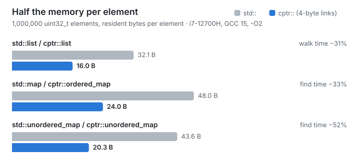

Half your pointers are wasted

On a 64-bit machine every pointer is 8 bytes. In a linked structure the
pointers are often most of what you store. A std::list<int> node holds two
pointers and one 4-byte int: 24 bytes, and 32 once malloc has added its
header. Four of those bytes are your data. A std::map<int, int> node is
three pointers, a colour and the pair: 48 bytes resident for 8 bytes of
data.
Most of those pointer bits never change. A process rarely spreads one data structure over more than 4 GiB of address space, so the top half of each pointer repeats the same value in every node.
compressed-ptr stores only the half that changes.
The trick
JavaScript engines and the JVM have done this for years: V8 calls it pointer compression, and the JVM's compressed oops are on by default for heaps under 32 GiB. The idea is the same in both:
- Reserve one region of address space, 4 GiB long and aligned to 4 GiB. This costs address space, not memory: pages are committed as they are used.
- Allocate the objects that point at each other inside that region (the cage).
- Store a pointer into the cage as its 32-bit offset from the start. Turning it back into an address is one add.
#include "cptr/all.hpp"
struct node {
cptr::ptr<node> next; // 4 bytes, not 8
int value;
};
cptr::ptr<node> head = cptr::make<node>(nullptr, 1); // allocated in the cage
node* raw = head; // and back to a plain pointer
A cptr::ptr<T> converts to and from T*, so code that takes plain
pointers keeps working. With 8-byte alignment the offset can be shifted,
which stretches one cage to 32 GiB.
What it buys
Swapping the container is the whole migration:
cptr::list<int> l; // was std::list<int>
cptr::ordered_map<int, int> m; // was std::map<int, int>
cptr::unordered_map<int, int> h; // was std::unordered_map<int, int>
With a million 4-byte elements on an i7-12700H (GCC 15, -O2):
std:: |
cptr:: |
time | |
|---|---|---|---|
| list, walk | 32.1 B | 16.0 B | −31% |
| map, find | 48.0 B | 24.0 B | −33% |
| unordered_map, find | 43.6 B | 20.3 B | −52% |
The memory halves because the links halve. The time drops because half the
memory means half the cache lines: once a structure is larger than your
caches, a walk is a chain of cache misses, and fewer bytes per node means
fewer misses. You can check this on your own machine with one program,
examples/expect_gains.cpp, or in the browser on
Compiler Explorer.
What it costs
Nothing here is free, and the benchmarks page says where it loses:
- Decompression is an add, plus a null check. When a pointer chase fits
in L1, that add is visible: up to 57% slower than raw pointers at the
median.
cptr::nonnull_ptrdrops the null check and the gap to about 17%. From L3 outwards the smaller nodes win. - Everything you compress must live in the cage. Allocate with
cptr::make, the bundled containers, orcptr::allocator. Compressing a pointer from elsewhere is a bug; debug builds assert, andCPTR_CHECKEDkeeps the check in release builds. - One structure, one cage, at most 4 GiB (32 GiB with 8-byte alignment). Several cages are fine, as each has its own type.
- Each Windows DLL gets its own cage. On Linux and macOS shared libraries share one.
If your data already lives in arrays and vectors, this library has little to offer you: there are no pointers to shrink.
Why not something else?
Indices into a std::vector. Also 4 bytes, and often the right answer
for a single structure you write yourself. But an index only means
something next to its vector, you lose the std container interfaces, and
code that wants a T* needs the vector at hand. A compressed pointer is a
pointer: it dereferences, converts to T*, and one cage serves every type.
boost::interprocess::offset_ptr. Built for a different problem: data
in shared memory mapped at different addresses. It is 8 bytes by default.
compressed-ptr gets the same property as a side effect: a
cptr::mapped_cage keeps a whole structure in a file that can be mapped
anywhere.
The x32 ABI. 4-byte pointers for the whole process, which then cannot use more than 4 GiB. Few distributions ship x32 libraries. compressed-ptr shrinks only the structures you choose.
A bigger machine. Sometimes. Halving the memory of your largest structures is often cheaper, and faster too.
Try it
- Compiler Explorer: edit and run in the browser, no install.
- Start in two minutes: a complete CMake project.
- Guide: how the cage works, every header, the rules.
compressed-ptr is MIT-licensed and header-only. It needs C++20 and a 64-bit target, and CI covers Linux, macOS and Windows with GCC, Clang and MSVC. Questions, ideas and benchmark results from your hardware are welcome in Discussions.